1. أين تقع هذه المرحلة من مسار المشروع
التبليغ
←
المعالجة
←
التحليل
←
مؤشرات الأداء KPI
←
التنبؤ بالذكاء الاصطناعي
←
اتخاذ القرار
- المعالجة: يصل عون القاعة إلى ما يحتاجه أسرع؛ الروابط الأربعون صارت سبع مجموعات حسب العمل، والخريطة تعرض ما يُطلب منها دون قائمة طويلة.
- اتخاذ القرار: على خريطة القيادة يفتح المسؤول مجلد «موارد الحماية المدنية» أو «المؤسسات الصحية» ويُظهر طبقاته بضغطة، تمهيدا لسجل الموارد وترحيله إلى الخريطة (R1 و R2).
2. مراجعة ← تصميم ← تطوير
الطلب: قائمة رئيسية مجمّعة تنفتح عند المرور، أو مسطّحة، في أعلى الصفحة أو يمينها أو يسارها، يختارها المستخدم من حسابه، بطابع زجاجي في الوضعين. ثم: طبقات الخريطة مجمّعة (المؤسسات الصحية بها المستشفيات والمصحات والصيدليات، وموارد الحماية المدنية…) لا في قائمة مسطّحة.
الأمن: المجموعات والمجلدات لا تمنح أي صلاحية. القائمة تعرض الروابط نفسها بقواعد الأدوار نفسها، والواجهة البرمجية تفرض القواعد. ولا يعيد الخادم إلا المجلدات التي فيها طبقة يراها الطالب، فلا تعرف اللجنة الجهوية ولا القاعات بوجود مجلد الطبقات الحساسة، والطبقة الحساسة لا تخرج منه.
UI-3: القائمة الرئيسية
- سبع مجموعات: العمليات اليومية، الأزمات والقيادة، التنبيهات والتواصل، المتطوعون والأطباء، المؤسسات، التحليل والمعرفة، النظام؛ المجموعة الفارغة لا تظهر، وذات الرابط الواحد تصير رابطا مباشرا.
- مجمّعة: تنفتح بالمرور (بعد 90 جزءا من الثانية لتفادي الفتح العرضي) أو بالنقر أو بلوحة المفاتيح، ويغلقها Escape ويعيد التركيز إلى زرها، وينغلق اللوح عند النقر خارجه أو عند اختيار رابط. مسطّحة: كل الروابط ظاهرة، وفي الشريط الجانبي تحت عنوان كل مجموعة.
- الموضع: أعلى الصفحة، أو شريط جانبي يمينا أو يسارا (جهة ثابتة في العربية والفرنسية والإنجليزية)؛ صفحات القيادة بملء الشاشة تتكيّف معه.
- «حسابي والإعدادات»: المستخدم وأدواره، اللغة، الوضع الليلي أو النهاري، شكل القائمة وموضعها، الخروج؛ الاختيار محفوظ في المتصفح.
UI-3b: مجلدات طبقات الخريطة
- 12 مجلدا مرتّبة: موارد الحماية المدنية، المؤسسات الصحية، الأمن، الإدارة، التعليم، النقل، المنشآت الاقتصادية، الماء والغابات، أماكن التجمع، المواسم والسواحل، الطبقات الحساسة، طبقات أخرى.
- التصنيف الآلي: الطبقة بلا مجلد تنزل في المجلد الذي يدل عليه مفتاحها (
osm_hospitals ← المؤسسات الصحية، prog_… ← المواسم) أو أيقونتها؛ والترحيل 0058 صنّف الطبقات الموجودة بالقواعد نفسها.
- على الخريطة: مجلدات تُفتح وتُطوى، بعدد الطبقات الظاهرة، وزر «إظهار الكل» بثلاث حالات (الكل، لا شيء، بعضها بعلامة −)؛ تُفتح افتراضيا المجلدات التي فيها طبقة ظاهرة، وتُحفظ المجلدات المفتوحة.
- الإدارة: تبويب «مجلدات الخريطة» لمدير المنظومة: الأسماء الثلاثة والأيقونة واللون والترتيب، والحذف للمجلد الفارغ فقط؛ ومجلد كل طبقة يُختار من إعداداتها ويُحفظ في نسخها. كل تغيير مسجّل في سجل التدقيق.
3. لقطات [SIM]
القائمة المجمّعة في الأعلى، نهارا بمجموعة مفتوحة ثم ليلا بقائمة الحساب:
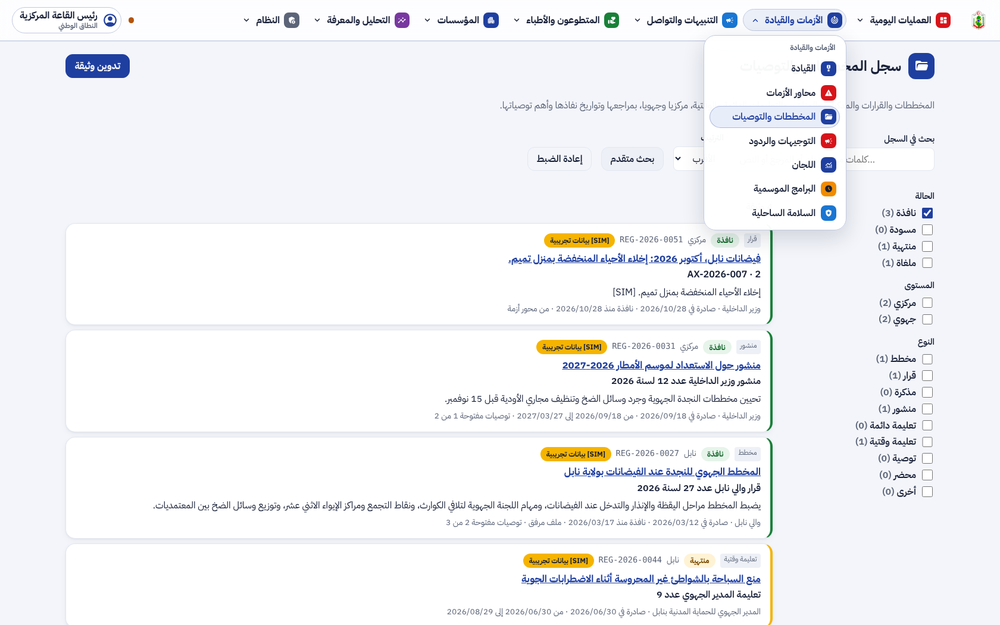
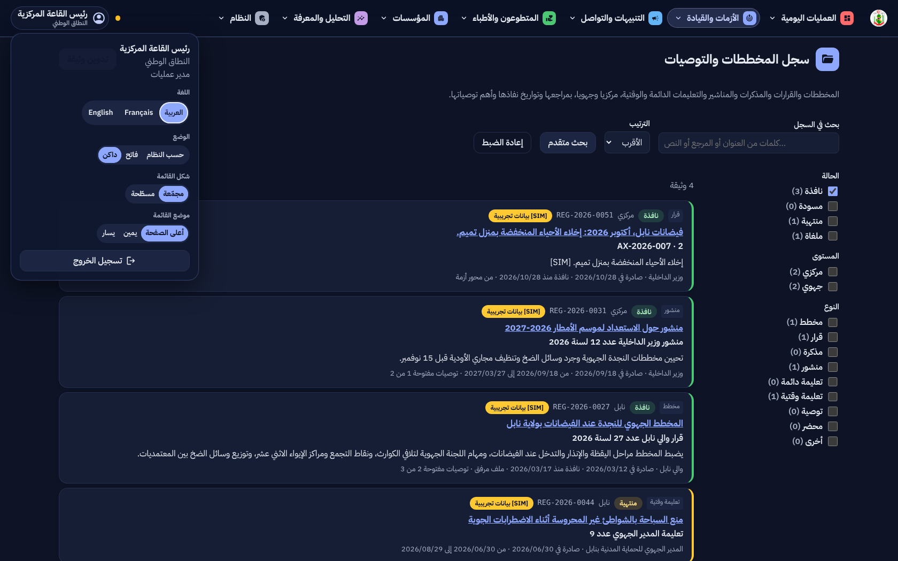
الشريط الجانبي على اليمين ليلا، والقائمة المسطّحة على اليسار ليلا وفي الأعلى نهارا:
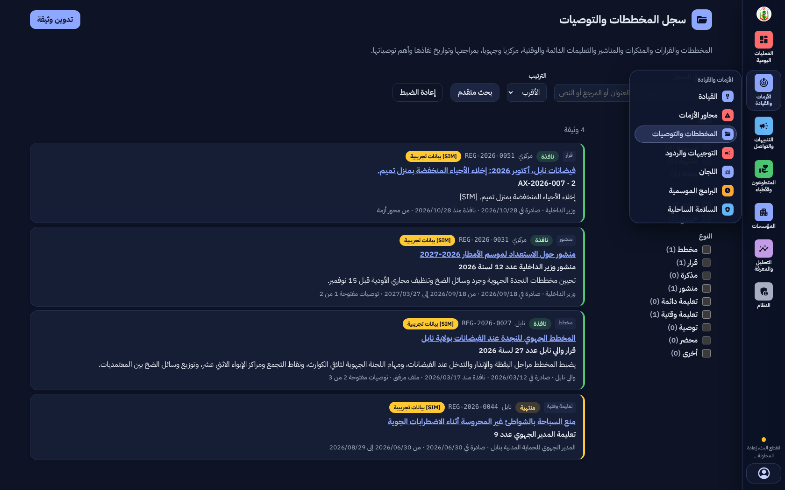
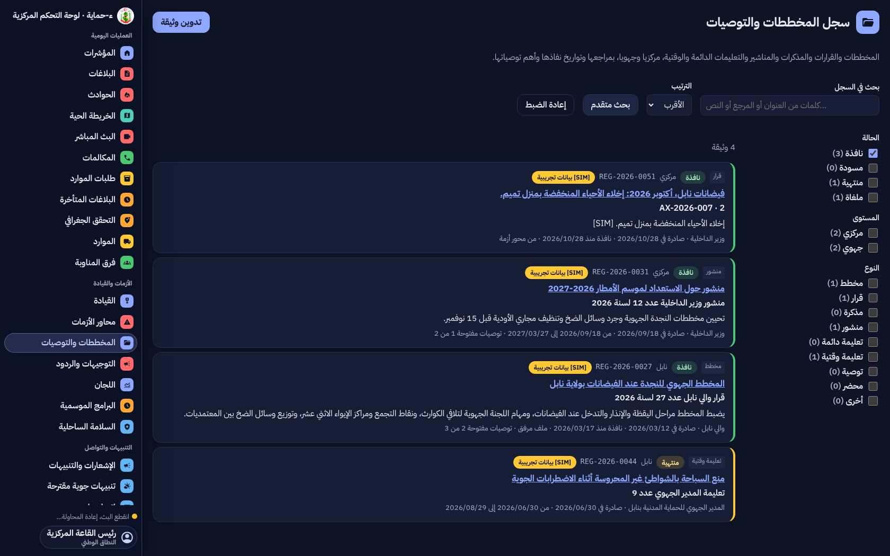
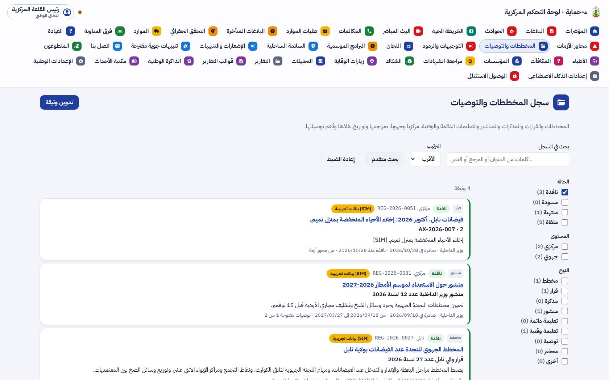
واجهة القيادة بملء الشاشة مع الشريط الجانبي:
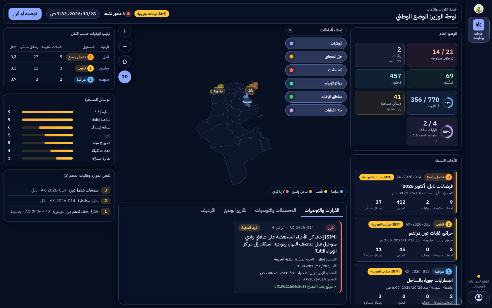
طبقات الخريطة في مجلدات، ليلا (مجلدا الحماية المدنية والصحة مفتوحان، وزر «إظهار الكل» بعلامة −) ثم نهارا مع الشريط الجانبي:
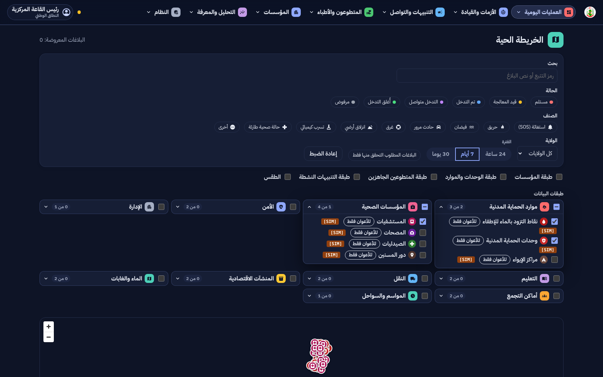
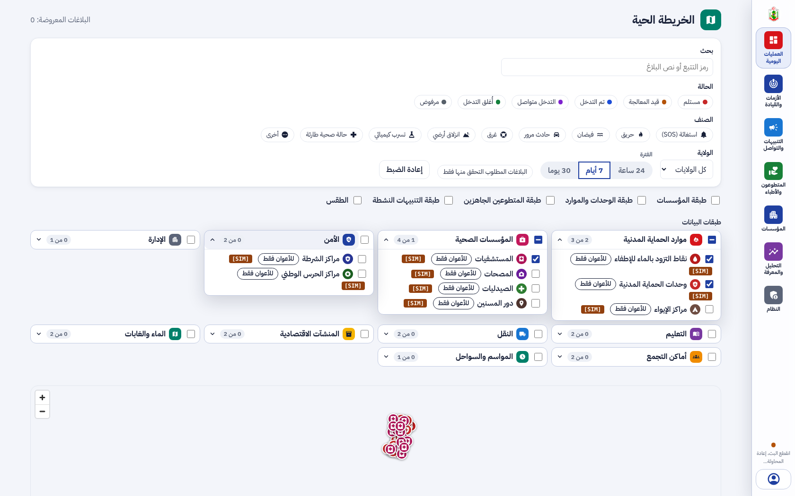
إدارة المجلدات (مدير المنظومة) نهارا، وتعديل مجلد ليلا، واختيار مجلد طبقة من إعداداتها:
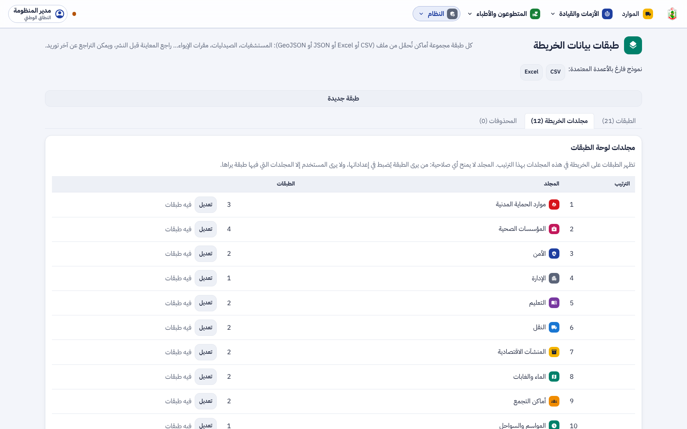
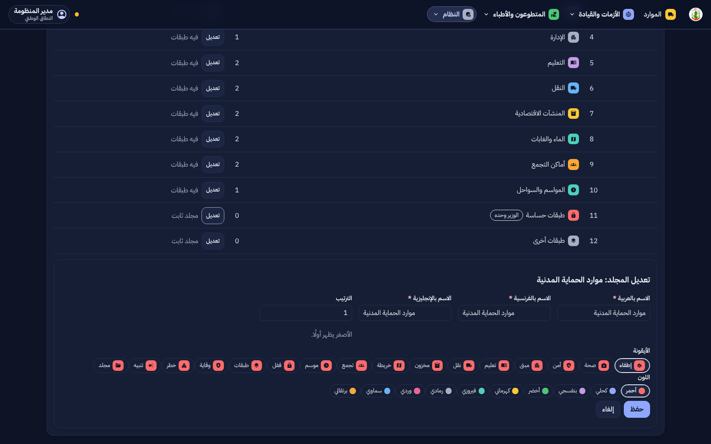
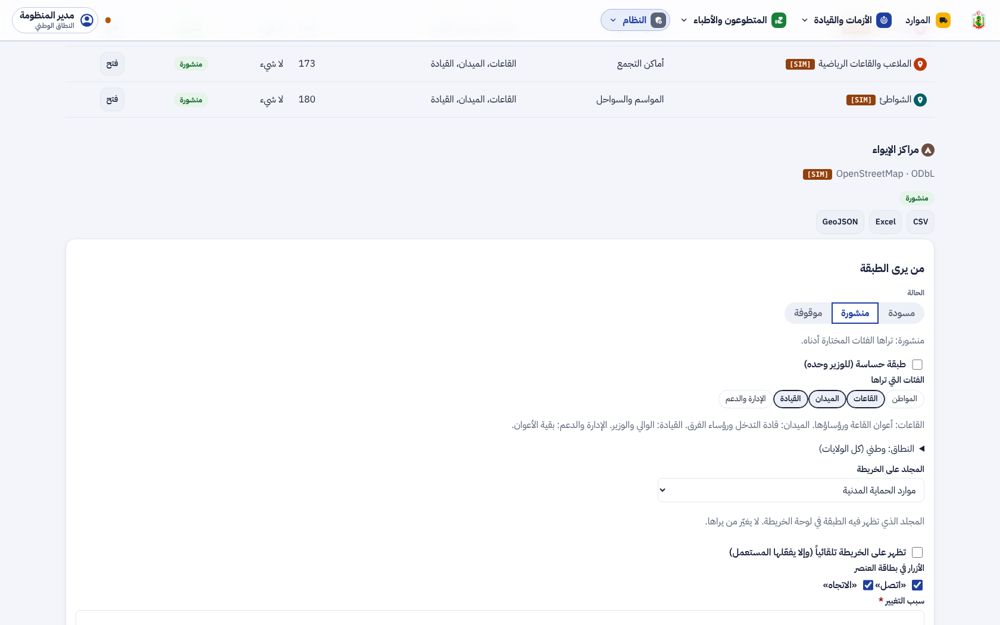
4. التقدم لكل جزء
| البند | الحالة | التقدم |
|---|
| F-DSH-66 القائمة الرئيسية: الشكل والموضع وقائمة الحساب | منجز (UI-3) |
|
| F-DSH-67 مجلدات الطبقات على الخريطة | منجز (UI-3b) |
|
| F-DSH-68 إدارة المجلدات ومجلد كل طبقة | منجز (UI-3b) |
|
| F-SRV-22 مجلدات الطبقات في الخادم، والقاعدة BR-07d | منجز (UI-3b) |
|
| طبقة الوحدات والموارد داخل مجلد «موارد الحماية المدنية» | مبرمج في R2 (M4) |
|
| حفظ اختيار القائمة في الحساب على الخادم | مؤجل (M1) |
|
تقدم UI-3 و UI-3b: 100%. التالي: سجل الموارد (R1) والبحث والترحيل إلى الخريطة (R2).
5. المحاكاة [SIM]
- [SIM] الطبقات ونقاطها في لقطات الخريطة مختلَقة بأسماء طبقات OSM المعتادة ونقاط حول تونس؛ كلها بالشارة.
- اللقطات بواجهة برمجية محاكاة؛ المجلدات الاثنا عشر هي نفسها التي ينشئها الترحيل 0058.
6. الاختبارات المطبقة
| المكوّن | العدد | النتيجة |
|---|
| الخلفية (pytest) | 953، منها test_layer_groups.py (11) | ناجحة (2 متخطّاة كالعادة) |
| الترحيلات | صعودا ونزولا ثم صعودا حتى 0058 | ناجحة |
| لوحة القيادة (vitest) | 521، منها القائمة (Layout) والمجلدات (MapDataLayers و LayersPage) | كلها ناجحة |
| لوحة القيادة (Playwright مع axe) | 64، منها القائمة بأشكالها الستة والمجلدات ليلا ونهارا | كلها ناجحة، دون أي مخالفة |
ruff و eslint و tsc، و OpenAPI و ERD بـ --check | — | لا ملاحظة |
- الرؤية: القاعة لا تتلقى مجلد الطبقات الحساسة، واللجنة الوطنية تتلقاه؛ ولا يُعاد مجلد فارغ لغير المدير.
- القواعد: الطبقة الحساسة لا تدخل غير مجلدها والعادية لا تدخله (422)؛ الطبقة التي تصير حساسة تنتقل إليه؛ المجلد الذي فيه طبقات لا يُحذف (409)، و«أخرى» و«الحساسة» ثابتان؛ استرجاع نسخة يعيد مجلدها.
- الإدارة: غير المدير لا ينشئ مجلدا (403)، والأيقونة واللون من قائمة معتمدة، والإنشاء والتعديل والحذف في سجل التدقيق.
8. المخرجات المحيَّنة
- الملف الوصفي V21 (docx و pdf) في
spec/: F-DSH-66 إلى 68 و F-SRV-22 منجزة، القاعدة BR-07d، 433 مسارا و520 عملية، الاختبارات، و UI-3 و UI-3b و R1-R2 في خارطة الطريق، ومصطلح مجلد الطبقات.
- مخططات UML في
diagrams/: تسلسل «طبقات الخريطة في مجلدات حسب ما يراه كل مستخدم» (61)، صنف مجلد الطبقات في مخطط المحتوى (24)، وحالات الاستعمال S44 إلى S46.
- العرض للمسؤولين في
presentation/: 37 مرحلة، الاختبارات، وخارطة الطريق.
- مرجع التصميم مُعاد توليده: design-reference.html.
- سجل الإصدارات، القائمة المؤجلة (§3.5)، ودليلا التنصيب (الترحيل 0058)، واللقطات في
screens/ui3/ و screens/ui3b/.
9. ملاحظات وانحرافات
- الألواح الزجاجية المتداخلة لا تُضبّب الصفحة في المتصفحات، فصارت ألواح القوائم شبه معتمة (97%) ليبقى النص مقروءا في الوضعين.
- اختيار القائمة يُحفظ في المتصفح لا في الحساب (M1)، كما الوضع الليلي.
- «طبقة الوحدات والموارد» ما زالت زرا فوق الخريطة؛ تدخل مجلد «موارد الحماية المدنية» مع سجل الموارد (M4، R2).
10. ما يلي
دمج #112. ثم سجل الموارد بكل ولاية (R1): المعدات بخصائصها (شاحنة إطفاء 2000 ل مثلا) والأعوان باختصاصاتهم (الغوص مثلا)، كل ولاية ترى مواردها والقاعة المركزية ترى الكل؛ ثم البحث في كل الولايات وترحيل النتائج إلى الخريطة حسب الولاية في مجلد «موارد الحماية المدنية» (R2)؛ ثم L4 و L5.